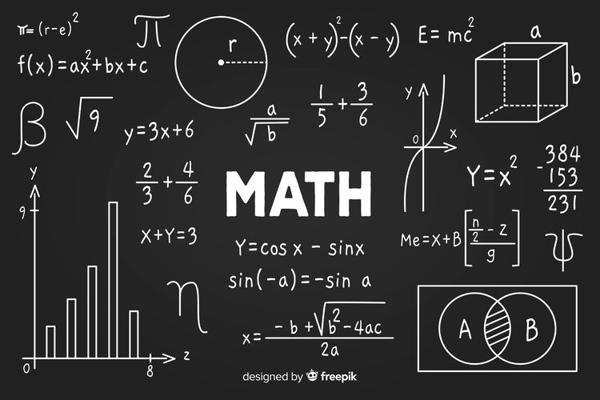
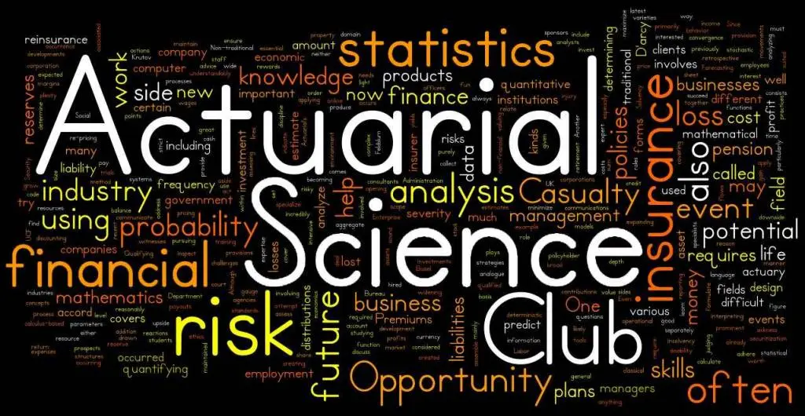

Program Studi Matematika

Jurusan matematika merupakan ilmu tentang angka dan perhitungan yang mempelajari kombinasi matematika murni dan terapan
(pure vs applied mathematics) seperti aljabar, geometri, analisis matematika, statistika, komputasi, aktuaria, juga riset operasi.
Prinsip dan hasil perhitungan matematika sering dijadikan patokan dalam memprediksi peristiwa alam seperti gerhana matahari,
gunung meletus dan banjir.
Jurusan Matematika memiliki prospek kerja dengan pendapatan yang menggiurkan, kamu bisa menjadi Aktuaris, data scientist,
dan data analyst sebagai beberapa contoh pekerjaan dengan gaji yang fantastis. Selain itu banyak bidang pekerjaan yang
membutuhkan lulusan dari jurusan ini yang terkenal akan kemampuan berpikir analitis, logika, serta kemampuan pemecahan masalah.
Bidang pekerjaan yang banyak membutuhkan lulusan jurusan Matematika di antaranya bidang teknik, teknologi informasi, ekonomi,
perbankan, manajerial, dan masih banyak lagi Meskipun lulusan jurusan teknik atau manajemen banyak memiliki keahlian praktikal,
lulusan jurusan matematika banyak diandalkan untuk memecahkan masalah yang lebih rumit dan membutuhkan kemampuan berpikir lebih
tinggi.
Program Studi Statistika
Jurusan Statistika merupakan cabang ilmu matematika yang mempelajari bagaimana merencanakan, mengumpulkan, menganalisis,
menginterpretasi, dan mempresentasikan data kemudian mengolahnya menjadi sebuah informasi yang bermanfat. Dalam Jurusan
Statistika, kompetensi yang diajarkan untuk mencapai kelima tujuan tadi diantaranya Strong Basic Statistics
(kompetensi untuk data collecting, eksplorasi data, metode analisis data, teoritis, aplikasi teori dan metode yang
dipelajari dalam kasus real secara mandiri), Excellent Soft Skill (kompetensi untuk komunikasi, adaptasi (team work,
under pressure, inisiatif, entrepreneurship, kejujuran, dan manajerial), serta Computation Skill (kompetensi data
processing menggunakan software statistic, programming, dan simulasi).
Jurusan ini cocok untukmu yang menyukai pelajaran matematika dan perhitungan, selain itu cocok bagimu yang menyukai data
dan pemprosesannya, sebab kamu akan banyak menganalisis dan mengolah data menjadi berbagai informasi yang bermanfaat.
Penerapan ilmu Statistika sendiri banyak dibutuhkan dalam kehidupan sehari-hari. Hal ini menggambarkan peluang kerja yang
besar di bidang Statistika sebab kebutuhannya tersebar di banyak sektor, mulai dari keputusan bisnis yang biasanya
dilakukan berdasarkan analisa data, kebijakan pemerintah pun banyak yang didasarkan dari data yang dikumpulkan lembaga
tertentu seperti BPS (Badan Pusat Statistik)
Program Studi Aktuaria

Pada umumnya, jurusan aktuaria mempelajari ilmu yang berkaitan dengan asuransi, baik itu asuransi umum atau jiwa.
Bukan hanya asuransi saja, program studi aktuaria ini mengajarkan para mahasiswanya untuk merancang solusi dari
permasalahan dan pengelolaan risiko pada dana pensiun, jaminan sosial, investasi, serta perbankan. Nantinya, kamu
sebagai mahasiswa jurusan ini juga akan belajar bagaimana cara memastikan stabilitas keuangan saat ini hingga masa depan di
industri terkait.
Di berbagai perguruan tinggi Indonesia, jurusan aktuaria dengan keilmuan yang lebih khusus ini masih terbilang baru.
Soalnya, di Indonesia sendiri profesi aktuaris sangatlah dicari di berbagai perusahaan. Akan tetapi, tenaga kerjanya
masih sangat sedikit. Bahkan, Otoritas Jasa Keuangan (OJK) sebagai lembaga keuangan milik pemerintah masih berupaya mencari
banyak aktuaris yang andal. Terlebih di berbagai perusahaan asuransi, yang memang sangat membutuhkan tenaga kerja dengan
keahlian khusus. Fakta menarik yang perlu kamu ketahui, jika profesi aktuaris dari lulusan prodi aktuaria ini sangatlah
menjanjikan, dari jenjang karir hingga besaran gaji karyawan. Makanya, jurusan ini akhirnya jadi incaran para calon
mahasiswa baru!